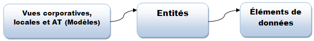
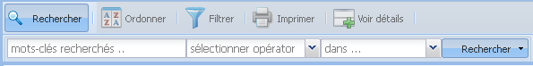
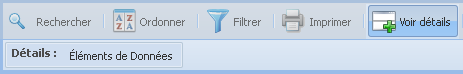

Se familiariser avec les composantes du Dictionnaire de données de la Santé et des Services sociaux (DDSSS) – définition des concepts
Le contenu du dictionnaire est organisé en trois types de composantes : les vues (modèles), les entités et les éléments de données des modèles.
Une vue (modèle) est composée d'une ou plusieurs entités. Chaque entité est décrite par un ou plusieurs éléments de données.
Une vue (modèle) est définie comme un sous–ensemble de l'Architecture d'Information (AI) du RSSS représentant une réalité particulière, un événement ou une pratique d'affaires définie. Les vues sont organisées en quatre catégories : les vues corporatives, les vues locales, les vues des Actions Terrains (AT) et la vue Corporative de la Santé et des Services sociaux.
Les vues corporatives des systèmes sont des sous–ensembles d'information de l'AI particulières à un système, par exemple : i–CLSC. Les vues des AT sont des sous–ensembles d'information de l'AI qui représentent une action, une décision ou un événement impliquant un ou plusieurs intervenants qui contribuent significativement à la réalisation d'un processus d'affaires.
Les vues corporatives et les vues des AT sont de haut niveau, c'est–à–dire, seuls les principales entités et les éléments de données communs à plusieurs sous–modèles d'intervention y sont définis. Les vues corporatives ne documentent pas les informations de nature technique (exemple : on n'y trouve pas le volet de journalisation des accès au système informatique).
Les vues locales des systèmes permettent de visualiser le contenu d'un système, par exemple i–CLSC, J57, MED–ECHO, etc. en fonction de l'architecture de l'information. Les vues locales, comme leur nom l'indique, sont au niveau local d'un projet. Les informations retrouvées dans ces vues décrivent les domaines de valeurs, les index, les formats et autres propriétés des éléments de données.
La vue corporative de la Santé et des Services sociaux est l'ensemble des informations de l'Architecture d'Information du MSSS (qui est représenté sous forme du Modèle Corporatif Conceptuel de Données). On peut considérer le MCCD comme un point d'aiguillage qui met en relation les diverses vues qui constituent l'architecture de l'information.
Organisation de l'interface web du dictionnaire
.png)
L'interface du site web du Dictionnaire de données de la Santé et des Services Sociaux (DDSSS) est organisée en trois zones majeures :
- La grille « Principale » au centre de l'interface, que sert à afficher le contenu du dictionnaire.
- La grille « Détails » située dans la partie inférieure de la grille « Principale », que permettre l'accès aux détails d'une vue.
- La barre de « Composantes du Dictionnaire » situé du côté gauche de l'interface, réservée aux utilisateurs avancés, offre des accès rapides aux trois composantes principales du dictionnaire : les éléments de données, les vues et les entités.
- En cliquant sur l'onglet « éléments de données » vous aurez accès à la liste complète des éléments de données du dictionnaire et aux fonctions rattachées pour la gestion des éléments de données (recherche, ordonner, filtrer imprimer). Les fonctions sont disponibles dans la forme d'une barre à outils.
- L'onglet « Vues » donne accès à la liste complète des Actions Terraines (AT), de vues corporatives et de vues locales des projets du RSSS. Une barre d'outils pour la gestion des vues est disponible dans cet onglet.
- Le « menu de navigation » facilite le déplacement entre les différents pages des résultats affichés dans la grille " Principale ". Le menu de navigation est situé dans la partie inférieure de l'interface.
Quand vous visitez le site web du DDSSS, deux onglets sont automatiquement affichés dans l'interface. Ces onglets sont les points principaux d'accès au contenu du dictionnaire: les éléments de données des systèmes et les vues (modèles de données) des systèmes.
Menu de navigation

Vous avez à votre disponibilité un menu de navigation pour faciliter le déplacement entre les différents pages des résultats affichés dans la grille « Principale ». Le menu de navigation est situé dans la partie inférieure de cette même grille.
La barre de « Composantes du Dictionnaire »
.png)
La barre de « Composantes du Dictionnaire » affiche l'arborescence des trois composantes principales du dictionnaire. À partir de cette arborescence, il est possible d'ouvrir plusieurs onglets des éléments de données, des entités et des vues. Afin de faciliter l'accès au contenu du dictionnaire aux utilisateurs débutants ou sans background technique, seulement deux onglets sont ouverts automatiquement à l'accueil du site web DDSSS: un onglet « éléments de données » et un onglet « Vues ». Pour l'utilisateur avancé, un troisième onglet est mis à sa disposition à partir de la barre : l'onglet « entité ». Une composante « entité » est une table dans laquelle se regroupent sémantiquement un ou plusieurs éléments de données, par exemple, l'entité « USAGER » regroupe les données concernant l'usager tel quel le nom et prénom de l'usager, le sexe, la date de naissance, le NAM, le numéro de dossier, etc. Le lien entre les trois composantes est le suivant : une vue (modèle) est composée d'une ou plusieurs entités. Chaque entité est décrite par un ou plusieurs éléments de données.
Ouvrir un nouvel onglet de composante :
- Ouvrez la barre de composantes en cliquant sur le bouton situé en haut de la même;
- Cliquez sur la composante à ouvrir (élément de données, entité ou vue). Le nouvel onglet s'ouvrira automatiquement à côté des onglets existants dans la partie supérieure de la grille « Principale »;
- Répétez l'étape 2 pour chaque nouvel onglet à ouvrir;
- Fermez la barre de composantes en cliquant sur le bouton situé en haut de la même;
La grille « Détails »
.png)
La grille « Détails » est divisée en deux espaces. L'espace à gauche affiche la liste des éléments de données de la vue du projet sélectionnée. L'espace à droite affiche la fiche descriptive de l'élément de donnée. Le contenu d'une fiche descriptive d'un élément de donnée varie dépendamment la « catégorie» de sa vue. La catégorie d'une vue est définie à partir du type de document utilisé pour réaliser le modèle de données du projet. Les catégories possibles sont (liste non exhaustive): un Cadre Normatif (CN), un P170S – Structure de l'information (Macroscope), un dictionnaire de données d'un projet, etc. Par exemple : si la vue du projet est catégorisée comme « Cadre Normatif (CN) » les métadonnées affichées sont celles propres au chapitre 3 d'un CN.
Visualiser la fiche descriptive d'un élément de données à partir d'une vue (si la grille « Détails » est affichée):
- Cliquez dans la grille « Détails » sur un élément de donnée; l'information sur l'élément sera affichée dans l'espace réservé pour la fiche descriptive;
- Répétez l'étape 1 pour chaque élément de donnée à voir.
Visualiser la fiche descriptive d'un élément de données à partir d'une vue (si la grille « Détails » n'est pas affichée) :
Pour visualiser la fiche descriptive d'un élément de donnée quand la grille « Détails » n'est pas affichée, suivez les étapes mentionnées dans « Voir les détails d'une vue » pour ouvrir la grille « Détails », ensuite, suivez l'étape 1 du « Voir la fiche descriptive d'un élément de données à partir d'une vue ».
Fermer/cacher la « Fiche descriptive d'élément de donnée »
Pour fermer/cacher la fiche descriptive cliquez sur le bouton situé en la partie droite au milieu de la grille « Détails » ou sur le bouton situe dans la partie supérieure à droite de la fiche descriptive.
Réafficher la « Fiche descriptive d'élément de donnée »
Cliquez sur le bouton situé dans la partie supérieure de la fiche descriptive ou sur le bouton situé dans la partie droite au milieu de la grille « Détails ».
Agrandir la grille « Détails » dans un nouvel onglet
Pour voir la fiche « Détails » en plein écran, cliquez sur la fonctionnalité « Voir dans un nouvel onglet ». Cette fonctionnalité se trouve dans le menu navigation de la grille « Détails » situé dans la partie inférieure de la même grille. La grille « Détails » actuelle sera affichée dans un nouvel onglet qui apparaitra à côté; des ongles « Vues » et « éléments de données ».
Fermer un onglet
Cliquez sur le bouton de l'onglet à fermer;
La barre d'outils des vues
Fonction « Rechercher » une vue
Chercher une vue de système :
- Cliquez sur le bouton « rechercher » de la barre d'outils; Les options disponibles du sous–menu de recherche apparaitront en bas de la barre d'outils;
- Entrez la (les) expression (s) de recherche dans le premier champ texte du sous–menu de recherche. Les expressions peuvent être en majuscules, minuscules, accentues ou sans accent. Dans le cas d'entrer plusieurs expressions, séparez–les l'une de l'autre par un espace en blanc;
- Sélectionnez un opérateur de la liste déroulante du deuxième champ. Cliquez sur le bouton pour ouvrir la liste déroulante des opérateurs. Cette étape est optionnelle, si aucun opérateur n'est sélectionné, l'opérateur par défaut est « égal »;
- Sélectionnez si vous désirez réaliser la recherche par le nom des « Vues » ou par les « Descriptions » des vues. Cliquez sur le bouton pour ouvrir la liste déroulante. Cette étape est optionnelle, la valeur par défaut est « Vues »;
- Cliquez sur le bouton « rechercher » du sous–menu.
Note: la fonction de recherche ne retourne pas des résultats si vous séparez les expressions par des virgules;
Les résultats sont présentés dans la grille principale du dictionnaire. Si aucun résultat n'est affiché, ça signifie que la fonction de recherche n'a rien trouvé par les critères sélectionnés. Vérifiez que les expressions utilisées pour la recherche ne contiennent pas de fautes d'orthographie et dans le cas d'entrer plusieurs expressions qu'elles soient séparées par des espaces en blanc.
Supprimer les filtres de la recherche
Cliquez sur le bouton situé du côté droit du bouton « rechercher », ensuite cliquez sur « supprimer les filtres ».
Fonction « Ordonner » les vues

La fonction « Ordonner » comme son nom l'indique, permet d'ordonner les résultats de la grille « Principale » de façon ascendante ou descendante par le nom des « Vues » ou par les « Descriptions » de vues.
Ordonner une vue : ascendante ou descendante
- Cliquez sur le bouton « Ordonner » de la barre d'outils; Les options disponibles du sous–menu ordonner apparaitront en bas la barre d'outils;
- Cliquez sur le bouton « Vues » du sous–menu pour changer l'ordre (ascendante/descendante) des résultats par le nom de la vue; OU
- Cliquez sur le bouton « Descriptions » du sous–menu pour changer l'ordre (ascendante/descendante) des résultats par la description de la vue.
Note : La petite flèche bleue située au côté gauche du bouton indique l'ordre actif. Les résultats affichés sur la grille « Principale » seront actualisés automatiquement.
Fonction « Filtrer » les vues

La fonction « Filtrer » offre des options pour le filtrage du contenu sur les vues. Le contenu peut être filtré par : vue AT, vue corporative et vue locale. Les options de filtrage s'appliquent uniquement au niveau du nom de « Vues ».
- Cliquez sur le bouton « Filtrer » de la barre d'outils; Les options disponibles du sous–menu de filtrage apparaitront en bas la barre d'outils;
- Cliquez sur une option de filtrage disponible dans le sous–menu : AT, Vue corporative, Vue locale;
- Les résultats de la grille principale seront filtrés par l'option sélectionnée. Pour effacer les filtres et revenir à la liste complète des résultats, cliquez sur l'option « Tous » du sous–menu.
Fonction « Imprimer » les vues

La fonction « Imprimer » les vues permet d'imprimer la liste complète des vues des projets du dictionnaire.
- Cliquez sur le bouton « Imprimer » de la barre d'outils, le sous-menu d'impression s'affichera.
- La grille « Principale » montre par
défaut 50 vues des projets par page. L'option d'impression
« Grille » imprime
seulement les vues actives par page. Si le total des vues des
projets dépassent la valeur de 50, vous pouvez changer la
valeur d'affichage des vues par page dans le « menu de
navigation » :
- Dans le « menu de navigation » cliquez sur la flèche pour ouvrir la liste déroulante des valeurs;
- Choisissez la valeur des vues par page que vous désirez obtenir : 25, 50, 100, 500; les résultats de la grille « Principale » s'actualiseront de façon automatique;
- Sélectionnez l'option « Grille » pour imprimer la liste active des vues.
Fonction « Voir détails » des vues
La fonction « Voir détails » permet de montrer les éléments de données qui appartiennent à une vue donnée. Les éléments de données sont regroupés dans une liste affichée dans la grille « Détails » qui s'affiche dans la partie inférieure de la grille principale.
Visualiser les détails d'une vue (si la grille des détails n'est pas affichée):
- Cliquez sur le bouton « Voir détails » de la barre d'outils;
- Sélectionnez sur la grille principale la vue du projet à consulter en cliquant sur le nom ou sa description de la vue;
- Cliquez sur l'option « éléments de données » du sous–menu « Voir détails »;
- La grille « Détails » contenant la liste des éléments de données appartenant à la vue sélectionnée s'affichera automatiquement;
Visualiser les détails d'une vue (si la grille des détails est déjà affichée):
Pour visualiser les détails de différentes vues, vous n'avez qu'à cliquer sur une des différentes vues des projets à consulter de la grille principale, le contenu de la grille « Détails » s'actualise automatiquement avec les nouvelles informations.
Fermer/cacher la grille « Détails »
Cliquez sur le bouton situé en la partie inférieure au milieu de la grille principale ou sur le bouton situe en la partie supérieure à droite de la grille « Détails ».
Réafficher la grille « Détails »
Cliquez sur le bouton situé à droite de la grille « Détails » ou sur le bouton situé en la partie inférieure au milieu de la grille principale.
La barre d'outils des éléments de données
Fonction « Rechercher » des éléments de données

Chercher un élément de données :
- Cliquez sur le bouton « Rechercher » de la barre d'outils; Les options disponibles du sous–menu de recherche apparaitront en bas de la barre d'outils;
- Entrez la (les) expression (s) de recherche dans le premier champ texte du sous–menu de recherche. Les expressions peuvent être en majuscules, minuscules, accentues ou sans accent. Dans le cas d'entrer plusieurs expressions, séparez–les l'une de l'autre par un espace en blanc;
- Sélectionnez un opérateur de la liste déroulante du deuxième champ. Cliquez sur le bouton pour ouvrir la liste déroulante des opérateurs. Cette étape est optionnelle, si aucun opérateur n'est sélectionné, l'opérateur par défaut est « égal »;
- Sélectionnez si vous désirez réaliser la recherche par le nom des « Vues » ou par les « Descriptions » des vues. Cliquez sur le bouton pour ouvrir la liste déroulante. Cette étape est optionnelle, la valeur par défaut est « Vues »;
- Cliquez sur le bouton « rechercher ».
Note: la fonction de recherche ne retourne pas des résultats si vous séparez les expressions par des virgules;
Les résultats sont présentés dans la grille principale du dictionnaire. Si aucun résultat n'est affiché, ça signifie que la fonction de recherche n'a rien trouvé par les critères sélectionnés. Vérifiez que les expressions utilisées pour la recherche ne contiennent pas de fautes d'orthographie et dans le cas d'entrer plusieurs expressions qu'elles soient séparées par des espaces en blanc.
Supprimer les filtres de la recherche
Cliquez sur le bouton situé du côté droit du bouton « rechercher », ensuite cliquez sur « supprimer les filtres ».
Fonction « Ordonner » les éléments de données

La fonction « Ordonner » comme son nom l'indique, permet d'ordonner les résultats de la grille « Principale » de façon ascendante ou descendante par le nom d'« élément de données » ou par le nom de la « Vue » d'élément de donnée.
Ordonner les éléments de données : ascendante ou descendante
- Cliquez sur le bouton « Ordonner » de la barre d'outils; Les options disponibles du sous–menu ordonner apparaitront en bas de la barre d'outils;
- Cliquez sur le bouton « éléments de données » du sous–menu pour changer l'ordre (ascendante/descendante) des résultats par le nom de l'élément de donnée; OU
- Cliquez sur le bouton « Vue » du sous–menu pour changer l'ordre (ascendante/descendante) des résultats par nom de la « Vue » de l'élément de donnée.
Note : La petite flèche bleue située au côté gauche du bouton indique l'ordre actif. Les résultats affichés sur la grille « Principale » seront actualisés automatiquement.
Fonction « Filtrer » les éléments de données

La fonction « Filtrer » permet de filtrer les résultats par une lettre de l'alphabet (A – Z). Cette option de filtrage s'applique uniquement au niveau du nom de l'« élément de donnée ». Le filtrage par lettre affiche tous les éléments de données de toutes les vues dont le nom commence par la lettre sélectionnée.
- Cliquez sur le bouton « Filtrer » de la barre d'outils; La fonctionnalité de filtrage par alphabet apparaitra en bas la barre d'outils;
- Cliquez sur une lettre de l'alphabet pour filtrer les éléments de données;
- Les résultats de la grille principale seront filtrés par l'option sélectionnée. Pour revenir à la liste complète, cliquez sur l'option « Tous » du sous–menu.
Fonction « Imprimer » les éléments de données

La fonction « Imprimer » vous offre deux options d'impression : l'impression de la liste des éléments de données d'un projet spécifique montrée dans la grille « Détails » ou l'impression de la fiche descriptive d'un élément de donnée sélectionné.
- Cliquez sur le bouton « Imprimer » de la barre des fonctions, le sous-menu d'impression s'affichera;
- La grille « Détails » montre
par défaut 50 éléments de données par
page. L'option d'impression « Grille » imprime
seulement les éléments de données actifs par
page. Si le total des éléments de données du
projet sélectionné dépasse la valeur de 50,
vous pouvez changer la valeur d'affichage des
éléments de données par page dans le «
menu de navigation »:
- Dans le « menu de navigation » cliquez sur la flèche pour ouvrir la liste déroulante des valeurs;
- Choisissez la valeur des éléments affichés par page que vous désirez obtenir : 25, 50, 100, 500; les résultats de la grille « Détails » s'actualiseront de façon automatique;
- Sélectionnez l'option « Grille » pour imprimer la liste active des éléments de données; OU cliquez sur l'élément de donnée à imprimer dans la grille « Détails » et ensuite sélectionnez l'option « Fiche » du sous-menu d'impression.
Table de matières
- Se familiariser avec les composantes du Dictionnaire de données de la Santé et des Services sociaux (DDSSS) – définition des concepts
- Organisation de l'interface web du dictionnaire
- Menu de navigation
- La barre de « Composantes du Dictionnaire »
- La grille « Détails »
- Fonctions des vues
- Fonction « Rechercher » une vue
- Supprimer les filtres de la recherche
- Fonction « Ordonner » les vues
- Fonction « Filtrer » les vues
- Fonction « Imprimer » les vues
- Fonction « Voir détails » des vues
- Fonctions des éléments de données
- Fonction « Rechercher » les éléments de données
- Supprimer les filtres de la recherche
- Fonction « Ordonner » les éléments de données
- Fonction « Filtrer » les éléments de données
- Fonction « Imprimer » les éléments de données